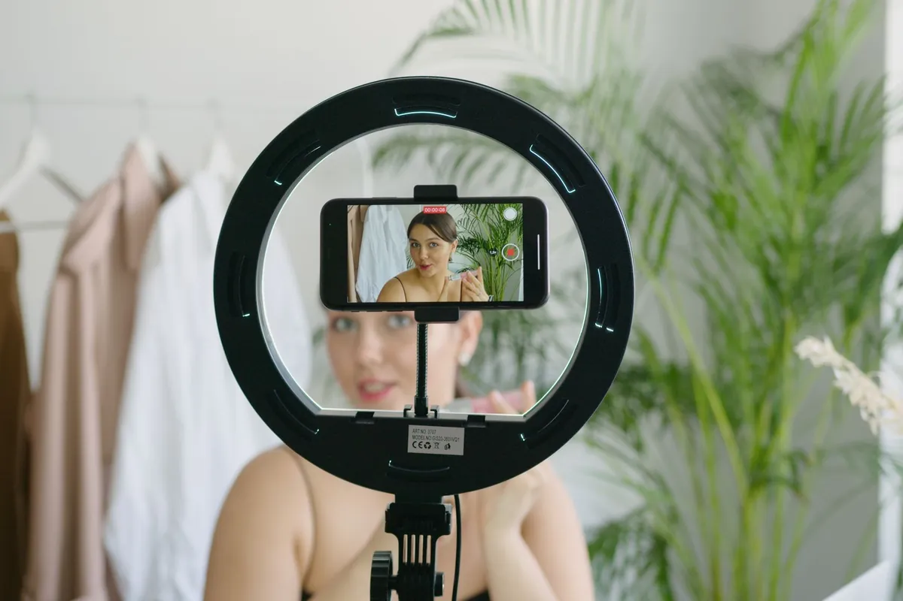

UGC for brands
UGC Usage Rights: A Plain-English Guide for Brands

Picture this. A brand pays for a batch of videos, the files land in its Google Drive, and the marketing team figures it owns them forever, everywhere, for anything. The creator figured the brand was posting them on its own Instagram for a few months. Nobody lied. Nobody wrote it down either. Cue the awkward email thread.
That gap is exactly what UGC usage rights fix. Usage rights spell out where a brand can run a creator's video, whether it can put ad money behind it, and for how long. I'm Trish, a GenX UGC creator, model and Navy veteran in Tampa. I am not a lawyer, so this is the plain-English version from the creator's side of the table: who owns the video by default, the usage tiers brands usually buy, what vendor rate guides say those tiers add, and a checklist for your UGC contract. If creator content is brand new to you, start with my guide to UGC for brands and come right back.
One quick note before we dive in: this is general information, not legal advice.
Who owns a UGC video by default?
The creator, unless the paperwork says otherwise. Even a vendor blog written for brands says it plainly: Hootsuite's UGC guide (opens in a new tab) notes that the creator holds the copyright, and that using their content without consent can lead to infringement claims.
So paying for a video and owning the copyright are two different things. What the brand actually gets is whatever the contract grants. There are two main ways that happens.
UGC licensing vs work for hire
A license. The creator keeps the copyright and gives the brand written permission to use the video in specific ways: certain channels, organic or paid, for a set amount of time. Every usage tier in this post is a flavor of license.
A work made for hire. Here the brand, not the creator, is considered the author. For a commissioned piece, like a video a brand orders from a freelance creator, the U.S. Copyright Office's Circular 30 (opens in a new tab) explains that it only works for certain types of work (a part of a motion picture or other audiovisual work is one of them) and only with an express written agreement between the creator and the party ordering it. Whether a specific deal qualifies depends on the contract and the facts, so that one is a question for your attorney, not your creator.
The usage tiers brands buy
Think of usage rights as a menu. Here are the items you will see most often on it.
Organic only. The brand posts the video on its own social accounts, and maybe its website, with no ad money behind it. This is the lightest use of the video.
Paid usage for a set term. The brand runs the video as an ad for a set window. In its creator rate guide (opens in a new tab), JoinBrands, a UGC marketplace, describes limited usage as one platform for 3 months and expanded usage as all paid channels for 6 to 12 months.
Perpetual rights. All channels, forever. That is the same guide's top tier, and it is priced like it.
Creator-account ads. The industry calls this whitelisting. The official names are Spark Ads (opens in a new tab) on TikTok and Partnership Ads (opens in a new tab) on Facebook and Instagram. The ad runs from the creator's post or with the creator's name on it, which is why it needs the creator's say-so. TikTok's help center says Spark Ads can use organic posts made by other creators with their authorization. Meta said in May 2025 that advertisers can now feature one partner, such as the creator, in a Partnership Ad's header. More on both below.
| Usage tier | What the brand can do | Typical term | Vendor-quoted add-on |
|---|---|---|---|
| Limited use | Run the video on one platform | 3 months | Base rate (JoinBrands) |
| Expanded paid use | Run ads on all paid channels | 6 to 12 months | +25% to 40% of base (JoinBrands) |
| Unlimited perpetual rights | Use it on all channels | Forever | +50% to 100% of base (JoinBrands) |
| Extended usage | Use it beyond the standard deal | Not specified | +30% to 50% of base (ppc.io) |
| Whitelisting (Spark Ads, Partnership Ads) | Run ads through the creator's own account | Billed per month | +30% to 100% of base per month (ppc.io) |
| Work made for hire | The brand is considered the author | Not a license term | Needs an express written agreement and a qualifying type of work (Copyright Office) |
UGC usage rights pricing: what vendor guides list
Let me be crystal clear here: these are vendor numbers. They are not my prices, and they are not an industry average. Rate guides publish ranges, and the ranges below come from two of them.
- JoinBrands lists expanded paid use (all paid channels, 6 to 12 months) at 25% to 40% on top of the base rate, and unlimited perpetual rights at 50% to 100% on top. The guide doesn't say what data its ranges come from.
- ppc.io (opens in a new tab), another vendor blog, says some larger UGC creators charge 30% to 50% of the base rate for extended usage rights.
- The same ppc.io guide says some brands pay an extra 30% to 100% of the base fee per month to run ads through the creator's account.
In plain math, a 50% add-on means the usage fee equals half the base rate. A 100% add-on doubles the total. The logic is simple: a video that runs on every channel forever does a lot more work for a brand than one that runs on one platform for a quarter, so rate guides price it higher.
Source: JoinBrands blog (vendor rate guide) (opens in a new tab)
Want to see what the base rates themselves look like? My post on how much UGC creators make walks through the published ranges, with the same vendor labels.

What to put in a UGC contract
Here's the checklist I'd want in front of both sides before anyone hits record. None of it is fancy. It just has to be written down.
- Deliverables and formats. How many videos, how long each one runs, which aspect ratios, how many hooks, and how much b-roll.
- Channels. Organic social, website, email, paid ads, TikTok Shop. List every one you plan to use.
- Paid or organic. If ad spend is going behind the video, say so in plain words.
- Term and territory. A start date, an end date, and the countries where the video can run.
- Creator-account authorization. Which posts, which platform, and for how long. TikTok lets advertisers customize the duration of a Spark Ads authorization code, so put a real number of days in the deal.
- Edits. Can the brand trim it, recaption it, add text or music, or cut new versions from it?
- Raw footage and b-roll. Are the unedited clips included, and do the same usage terms cover them?
- Exclusivity. If the creator can't work with competitors, for how long, and in which product categories?
- Payment terms. The amount, the due dates, and whether it is a monthly retainer or a one-time project.
- Disclosure. Who adds the #ad, and where. The FTC's Disclosures 101 (opens in a new tab) tells creators that if a brand gives them free or discounted products or other perks and they mention its products, they should make a disclosure. And under the FTC Endorsement Guides (opens in a new tab), advertisers can be liable for misleading endorsement claims or for failing to disclose material connections. Both sides have skin in this game.
If you're sending me a brief, my contact page has a short checklist built right into the email, so you can get a quote fast.
Spark Ads and Partnership Ads permissions
Creator-account ads deserve their own section, because the permission works differently from a file sitting in your Drive.
On TikTok, Spark Ads let an advertiser run organic TikTok posts as ads. When the post belongs to another creator, that creator has to authorize it, and TikTok lets the advertiser customize how long the authorization code lasts. Here's a detail worth knowing: TikTok says all of the Spark Ads post engagement is attributed to the original organic post. The likes, comments and shares stack up on the creator's post, not on a separate ad.
On Facebook and Instagram, the equivalent is Partnership Ads. At the 2025 IAB NewFronts, Meta announced that advertisers can now feature one partner in the ad's header, where both the advertiser and the partner used to be listed.
What to write down: which posts, which ad accounts, the start and end dates, and what happens to any ads still running when the term ends. The full setup lives in my TikTok Spark Ads guide, and if you're planning the creative itself, my post on UGC ads covers hooks and scripts.
Questions to ask before you sign
Run through these before anybody signs anything:
- Is this a license or a work made for hire, and does the contract say so in writing?
- Which channels are covered, and is any of it paid?
- When does usage end, and what happens to live ads on that date?
- Is creator-account access included, and for how long?
- Do we get raw footage, and are we allowed to edit?
- Is there exclusivity, and is it priced in?
- Who handles the disclosure, and how?
This is general information, not legal advice. Have an attorney review contracts.
How usage rights work with me
Every package I offer is a custom quote, and usage is set per project. The price depends on how many videos you need, how much b-roll, and where and for how long you'll run them. So tell me your usage plan up front, and it goes right into the quote. I don't publish prices here, and the vendor ranges above aren't mine.
I deliver batches of videos and b-roll to your Google Drive, on a monthly retainer or as a one-time project. If you want the ads run too, I quote UGC and ads packages together with my ads partner. What I won't do: alcohol, tobacco or gambling, or canvas UGC, where I'd have to build a brand-new account and keep posting to it for you.
One honesty note, because the FTC cares and so do I: a product showing up in one of my videos does not mean that brand hired me. Some of what you see is just my own content.
Ready to talk usage? Check out how I work with brands, and if you're still building a budget, my UGC creator rates post is a good place to start.
Questions people ask
Does a brand own UGC it pays for?
Not automatically. The creator holds the copyright unless the paperwork says otherwise. The brand gets the rights the contract grants: usually a license for set channels and a set term, or, only if the deal qualifies, a work made for hire under an express written agreement.
What is UGC whitelisting?
Industry slang for running ads through the creator's own account or post. On TikTok the official name is Spark Ads, and on Facebook and Instagram it is Partnership Ads. One vendor blog, ppc.io, says some brands pay an extra 30% to 100% of the base fee per month for it.
How long should UGC usage rights last?
There is no single right answer. JoinBrands, a vendor, describes limited usage as one platform for 3 months and expanded paid usage as all paid channels for 6 to 12 months. Match the term to your ad plan and write the end date into the contract.
Is UGC a work made for hire?
Only if the deal qualifies. The U.S. Copyright Office says a commissioned work counts only when it is a certain type of work, such as part of an audiovisual work, and both sides expressly agree in writing. Have an attorney review the contract.
References
- What is user-generated content (UGC)? Guide for 2026 (opens in a new tab). Hootsuite blog (vendor).
- Circular 30: Works Made for Hire (opens in a new tab). U.S. Copyright Office.
- Spark Ads (opens in a new tab). TikTok Ads Manager Help Center.
- Meta at IAB NewFronts 2025 (opens in a new tab). Meta for Business.
- How Much Do UGC Creators Charge? 2026 Rate Guide (opens in a new tab). JoinBrands blog (vendor).
- UGC Rates in 2026: What 6 Marketplaces Charge (opens in a new tab). ppc.io blog (vendor).
- Disclosures 101 for Social Media Influencers (opens in a new tab). Federal Trade Commission.
- 16 CFR 255.1: General considerations (FTC Endorsement Guides) (opens in a new tab). Legal Information Institute, Cornell Law School.
Keep reading

Start here
UGC for Brands: The Grown-Up Guide to Creator Videos That Sell
What UGC means for a brand, where it runs, which rights to get in writing, and why households headed by Gen X are worth a creator who looks like them.

TikTok Spark Ads: Running a Creator's Video as Your Ad
TikTok Spark Ads let a brand run a creator's real post as an ad. Here's how the authorization code works, how it compares to whitelisting and Partnership Ads, and what to put in writing.

How Much Do UGC Creators Make? Honest 2026 Rate Ranges
Labeled 2026 UGC rate ranges from vendor guides and marketplaces, what pushes a quote up, how TikTok Shop commission works, and a rate card you can build today.